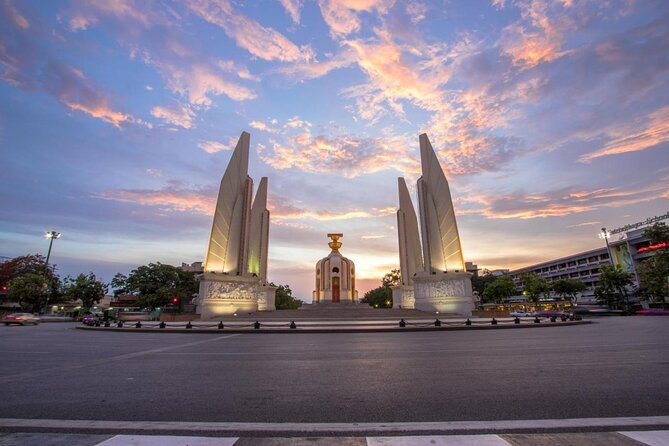
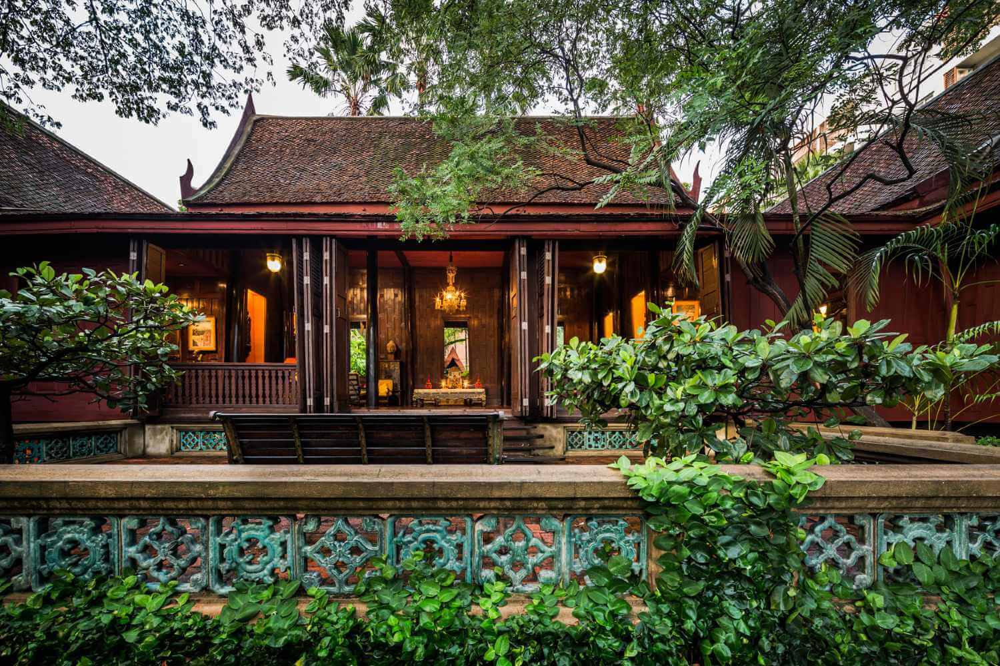

Bangkok – Landmarks

Wat Arun
The Temple of Dawn, known for its riverside location and unique spires.

Democracy Monument
Historic monument located in central Bangkok, a symbol of Thai history.

Jim Thompson House
Traditional Thai teak house showcasing art, architecture, and silk heritage.